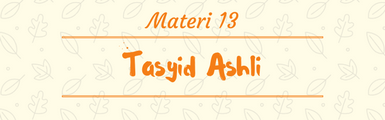

1. Pengertian Tasydid
Tasydid adalah tanda baca (harakat) berbentuk kepala dari huruf sin ( س ) atau mirip seperti huruf w. Tasydid adalah simbol penekanan pada suatu konsonan ganda, atau sebuah tanda baca yang terjadi karena pertemuan (pengulangan) dari sebuah huruf yang sama.
Panjang bacaan untuk huruf bertasydid umumnya adalah 1 alif atau sekitar 2 harakat. Namun dapat dibaca lebih panjang lagi, seperti Tasydid yang ada di dalam Hukum Ghunnah Musyaddadah. Dan akan lebih tebal (panjang) pantulannya ketika masuk ke dalam Hukum Qolqolah Kubro ( qolqolah yang berhenti karena tanda waqof).
2. Macam-Macam Tasydid
Taydid terdiri dari 2 macam, yaitu :
1. Taydid Hukum
Tasydid Hukum adalah tasydid yang diberikan karena adanya HUKUM PERTEMUAN antara huruf/kata yang satu dengan huruf/kata berikutnya – berada di tengah ayat atau pada saat washal – seperti tasydid yang ada di dalam hukum-hukum Idgham. Di dalam suatu ayat di Al-Quran – Tasydid Hukum dapat terjadi dalam suatu kata/kalimat dan dapat pula terjadi pada kata/kalimat yang terpisah.
2. Tasydid Asli
Tasydid Ashli adalah tasydid yang diberikan sesuai dengan asal-muasalnya, atau bukan karena Hukum Pertemuan/Peleburan Huruf/Kata. Berada di dalam satu kata/kalimat. Tasydid Ashli mesti ada di dalam Al-Quran, berbeda dengan Tasydid Hukum, karena apabila Tasydid Ashli tidak ditulis dapat menyebabkan kekeliruan yang sangat fatal.
Tasydid Ashli dapat berarti DUA HURUF yang sama sifat dan mahrajnya yang berada dalam satu kata/kalimat, dan DIJADIKAN SATU HURUF BERTASYDID; asal muasalnya adalah satu huruf dalam keadaan sukun, dan satu lagi memiliki baris/harakat (dapat berupa Fathah, Fathatain, Kasrah, Kasratain, Dhammah dan Dhammatain).
3. Berhenti Pada Huruf Tasydid
-١- وَقُلْنَا اهْبِطُوا بَعْضُكُمْ لِبَعْضٍ عَدُوٌّ ۖ -٢- الَّذِينَ يَأْكُلُونَ الرِّبَا لَا يَقُومُونَ إِلَّا كَمَا يَقُومُ الَّذِي يَتَخَبَّطُهُ الشَّيْطَانُ مِنَ الْمَسِّ ۚ -٣- وَمَا كَانَ لِنَبِيٍّ أَنْ يَغُلَّ -٤- يَقُولُونَ لَئِنْ رَجَعْنَا إِلَى الْمَدِينَةِ لَيُخْرِجَنَّ الْأَعَزُّ مِنْهَا الْأَذَلَّ -٠- يَقُولُ الْإِنْسَانُ يَوْمَئِذٍ أَيْنَ الْمَفَرُّ -٦- مِنْ بَعْدِ وَصِيَّةٍ يُوصَىٰ بِهَا أَوْ دَيْنٍ غَيْرَ مُضَارٍّ -٧- لَمْ يَطْمِثْهُنَّ إِنْسٌ قَبْلَهُمْ وَلَا جَانٌّ -٨- وَإِذِ ابْتَلَىٰ إِبْرَاهِيمَ رَبُّهُ بِكَلِمَاتٍ فَأَتَمَّهُنَّ -٩- تَبَّتْ يَدَا أَبِي لَهَبٍ وَتَبَّ -١٠- فَمَنْ فَرَضَ فِيهِنَّ الْحَجَّ فَلَا رَفَثَ وَلَا فُسُوقَ وَلَا جِدَالَ فِي الْحَجِّ -١١- فَمَنْ لَمْ يَجِدْ فَصِيَامُ ثَلَاثَةِ أَيَّامٍ فِي الْحَجِّ وَسَبْعَةٍ إِذَا رَجَعْتُمْ -١٢- ذَٰلِكَ بِأَنَّهُمْ كَانُوا يَكْفُرُونَ بِآيَاتِ اللَّهِ وَيَقْتُلُونَ النَّبِيِّينَ بِغَيْرِ الْحَقِّ -١٣- ذَٰلِكَ بِأَنَّهُمْ كَانُوا يَكْفُرُونَ بِآيَاتِ اللَّهِ وَيَقْتُلُونَ الْأَنْبِيَاءَ بِغَيْرِ حَقٍّ